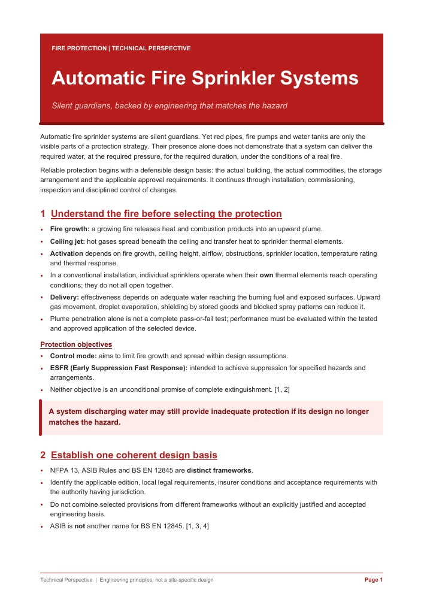
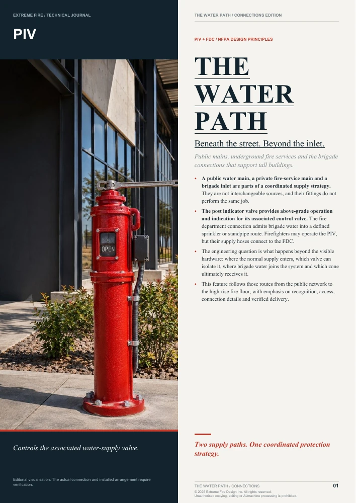

Hazards, commodities & in-rack sprinklers
The Storage Equation
Go deeper into occupancy versus commodity classification, plastics and packaging, rack geometry, in-rack assemblies and coordinated hydraulic demand.
EXTREME FIRE / INSIGHTS & INDUSTRY
Engineering perspectives for the people who design, manage and protect buildings. Read our technical publications and follow developments shaping fire safety.
TECHNICAL PUBLICATIONS / ZIMBABWE NEWS / GLOBAL DEVELOPMENTS
THE TECHNICAL LIBRARY
Three in-depth publications from Extreme Fire Design. Open a publication to read it in your browser, or download your copy.
Hazards, commodities & in-rack sprinklers
Go deeper into occupancy versus commodity classification, plastics and packaging, rack geometry, in-rack assemblies and coordinated hydraulic demand.

Engineering principles
Why the hazard, available water supply and hydraulic calculations must work together. Explore system design, storage changes and the limitations of a visual inspection.

PIVs, FDCs & water supplies
Trace the public main, private fire service and fire department connection. Understand valve visibility, brigade access and the pressure-zone challenges of high-rise buildings.
These publications explain engineering principles. The applicable standard, edition, equipment limitations and approvals must be established for each project.
ZIMBABWE / FIRE PROTECTION WATCH
Local developments, clearly explained. Follow building safety, firefighting water supplies and emergency response in Zimbabwe.
Sources reviewed
Beitbridge / Veld fire response
ZBC reports that a veld fire near the Beitbridge town water reservoir took two days to contain. The municipality and rural district council pooled firefighting resources; the Forestry Commission said the cause was being investigated.
For facility teams Site planning should address vegetation around premises, emergency access and coordination with local responders. This report concerns a veld fire, rather than a sprinkler-system performance test.
Read the original at ZBC News (opens in a new tab)Bulawayo / Incident report
CITE reports that a fire affected a residential house at Cowdray Park Hospital. The Chief Fire Officer described preliminary findings pointing to an electrical plug near a sofa; firefighters restricted the fire to the sitting room.
For facility teams The reported cause was preliminary. Keep electrical maintenance, combustible materials near equipment and clear escape routes within the facility’s fire-risk review.
Read the original at CITE (opens in a new tab)Bulawayo / Fire prevention
CITE reports that Bulawayo’s Fire and Ambulance Service identified electrical faults, blocked exits, poor housekeeping and poorly maintained firefighting equipment. Inspections also consider extinguishers, hose reels and hydrants.
For facility teams For building managers, equipment accessibility and maintenance records belong alongside electrical safety and escape-route checks. The report does not establish a new nationwide inspection interval.
Read the original at CITE (opens in a new tab)Harare / Firefighting water supply
The Herald reports that water shortages were limiting the usefulness of parts of Harare’s hydrant network, with water bowsers supporting fire engines. The report attributes the concern to the Department of Civil Protection’s chief director.
For facility teams A visible hydrant is not evidence of available flow. Verify the water supply serving a facility and the assumptions behind any fire-protection design; this report does not establish the condition of every hydrant.
Read the original at The Herald (opens in a new tab)Independent reporting, summarised with attribution. Reported causes and investigations retain the status given by the source. Extreme Fire is not represented as having attended these incidents.
INDUSTRY WATCH
Independent news, research and standards updates, with links to the original publishers.
Editorial review:
Regulatory proposal / United States
NFPA reports that CMS has proposed moving affected US healthcare facilities to the 2024 editions of NFPA 99 and NFPA 101. The proposal opens a public-comment process; it is not a final rule.
In context For facility teams, this is a reminder to track the adopted edition and the status of a proposed change. It does not establish a new requirement in Zimbabwe.
Read the original at NFPA (opens in a new tab)Emerging risks / International
A November NFPA Journal report describes an energy-transition summit focused on fire safety, including lithium-ion batteries in electric vehicles and battery energy storage systems, and the challenges of technologies used together at one site.
In context For site planning, the relevant question is the complete installation and its interfaces. An existing general storage classification does not, by itself, establish protection for a new energy installation.
Read the original at NFPA Journal (opens in a new tab)Standards watch / British & European
BSI's standards record identifies BS EN 12845:2015+A2:2026 as the current release for automatic sprinkler system design, installation and maintenance. The preceding A1:2019 version is listed as a historical version.
In context Check the edition named in the project specification, approval and insurer requirements. A catalogue update does not automatically change the approved basis of every existing installation.
Read the original at BSI (opens in a new tab)Research / United States
NIST Technical Note 2365 brings together several data sources to study lithium-ion battery fires. The researchers identify fragmented reporting and substantial underestimation in available records.
In context Treat incident data with its scope and uncertainty intact. This research is evidence about reporting and risk, not a sprinkler design table or a substitute for an installation-specific assessment.
Read the original at NIST (opens in a new tab)Dates refer to the source publication unless marked “status checked”. International developments are presented with their jurisdiction and status; they do not automatically become Zimbabwean requirements.
APPLY THE KNOWLEDGE
New stock, taller storage, altered racking or a different water supply can change the protection assessment. Discuss your current installation and the records needed for a scoped review.
Discuss your fire protection